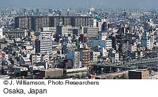

8. The explosion and concentration of the world's population (throughout
the 1900's)
The world's population was
five times as large by the end of the 1900's as it was just 150
years ago, and it is projected to double in the next 50 years. This
growth is concentrated in the less economically developed parts of the
world. There is also a strong worldwide tendency for populations to
concentrate in urban centers. As a result of this trend, the countryside
became depopulated and cities swelled.

More information:
|
Ivan Soll
is a Professor of Philosophy at the University of Wisconsin-Madison. His Top 10 list also focuses on large-scale, far-reaching developments. He sounds a note of caution based on rapid world population growth and technological development, referring to our "tendency to pollute, or otherwise destroy without using, the very resources we so desperately need."
|